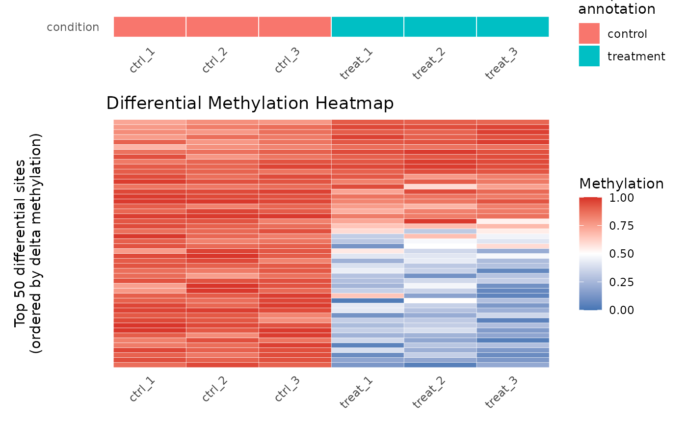
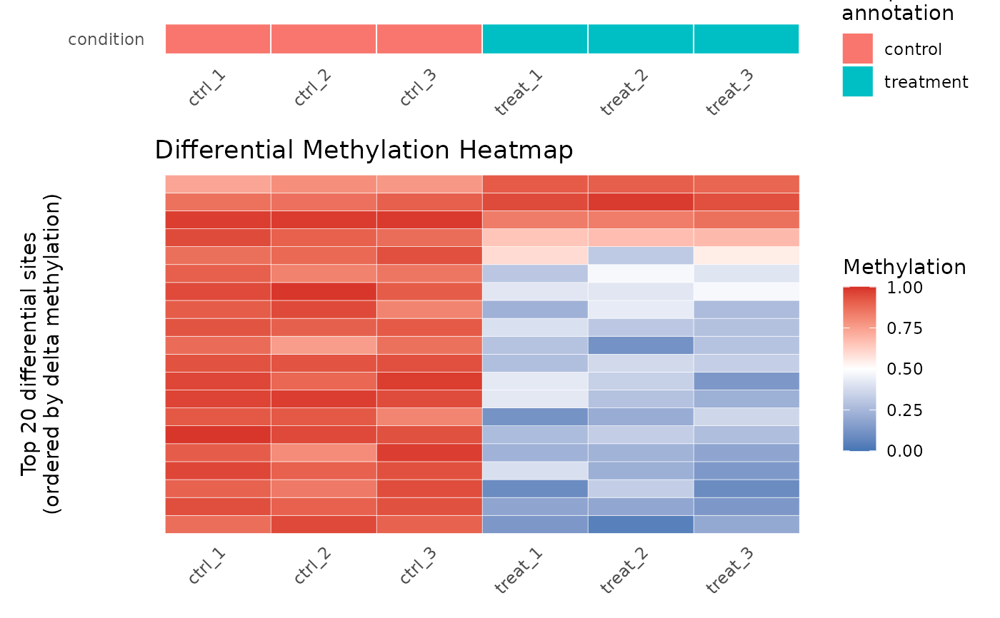

Produces a heatmap showing methylation beta values for the top differentially methylated sites across all samples. Sites are ranked by adjusted p-value and ordered vertically by effect size (delta beta) to reveal condition-specific patterns.
Arguments
- results
A
data.framereturned byresults(), containing at minimum the columnschrom,position,strand,mod_type,dm_padj, anddm_delta_beta.- object
A
commaDataobject that was used to produceresults. Used to extract the methylation matrix for selected sites.- n_sites
Positive integer. The number of top sites (ranked by ascending
dm_padj) to include in the heatmap. If fewer significant (non-NApadj) sites exist, all are shown. Default50.- annotation_cols
Character vector naming columns from
sampleInfo(object)to display as a colored annotation bar above the heatmap. IfNULL(default), theconditioncolumn is used.
Value
A ggplot object. The x-axis shows sample
names; the y-axis shows the selected sites (y-axis labels suppressed for
readability). The fill color encodes methylation beta (blue = 0,
white = 0.5, red = 1). NA values are shown in light grey. An
annotation strip below shows sample-level metadata encoded by color.
Examples
data(comma_example_data)
cd_dm <- diffMethyl(comma_example_data, ~ condition)
res <- results(cd_dm)
plot_heatmap(res, cd_dm)

# Show only top 20 sites
plot_heatmap(res, cd_dm, n_sites = 20)
